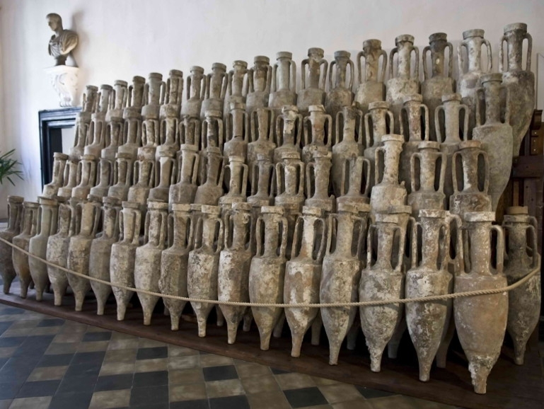
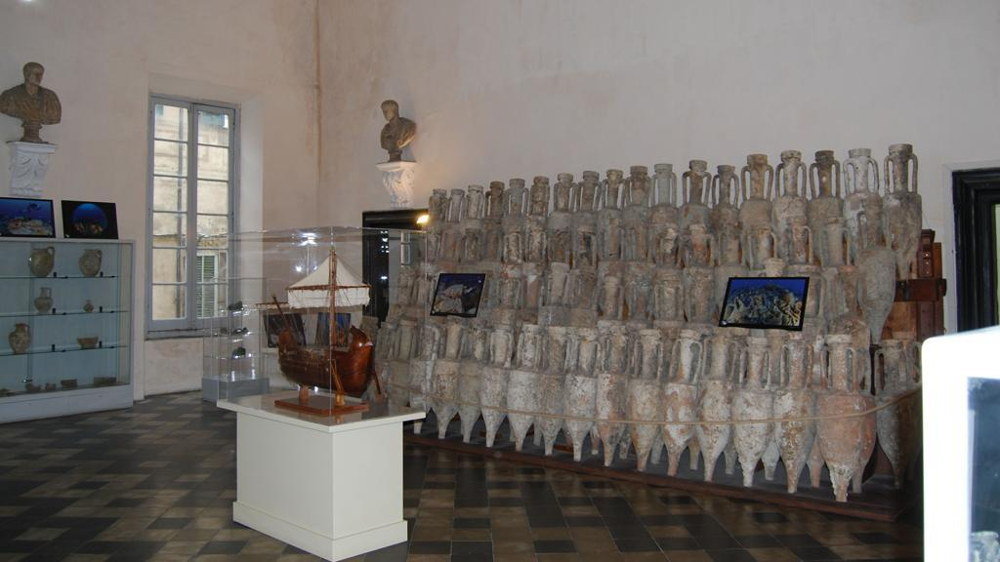
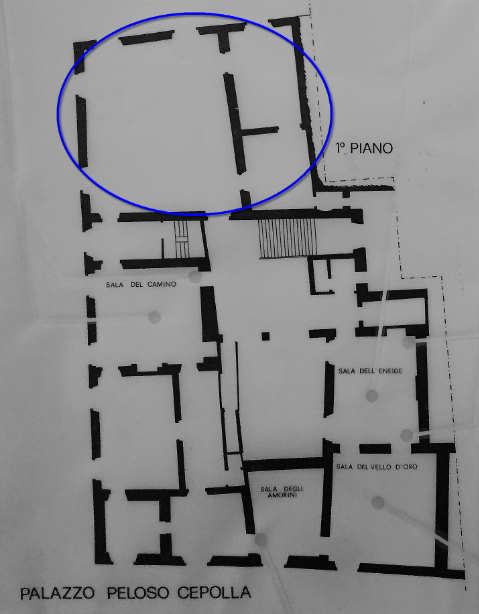

ViRS (Virtual Roman Shipwreck) is a project made for the course 'Museology, Museography and
Virtual Environments' (prof. Caraceni) inside the Master of Digital Humanities and Digital
Knowledge at University of Bologna. It aims to design a full museum where virtual experiences coexist and are enhanced by
the presence of true historical artifacts, explanatory panels and guided tours, that are the features of traditional museums.

The Cultural HeritageWhat is ViRS about?
The idea of the ViRS project originated in the observance of the Roman Naval Museum, in Albenga (province of Savona, Italy).
This little museum offers the relics of the largest Roman navis oneraria (i.e. transport vessel)
known in the Mediterranean, with a load exceeding 11,000 wine and oil amphorae, and therefore a net capacity of 450/500 tons.
It is believed that the wine contained in the amphorae was from Campania and was destined for the markets of southern France and Spain, along with
black-glazed ceramics and other types of pottery. Objects of personal use of the crew and of the armed escort on board (helmets and armours)
have also been recovered and exposed in the museum, among interesting artifacts like a lead horn, a crucible, wooden planks,
hazelnuts to be traded and pine cones to achieve optimum wine aroma preservation.
The museums is organized in three little rooms that display the artifacts mentioned above, recovered during the various excavation campaigns, begun in 1950. The
main attraction remains the view of the amphorae, placed according to the original arrangement of the load (as it can be seen in the Figure below).

- The main room of the Roman Naval Museum in Albenga -
The date of the sinking falls between 100 and 90 B.C., moment which coincides with the granting of the Latin right to the Ligurian populations,
with the Romanization of the region and the consequent development of the cities, including Albenga, once known as Albingaunum. Nowadays, the
ship is located 42 mt below sea level and 1.400 mt from the coast; most of it is underground: only amphorae and fragments of wood remain visible.
Pass your mouse over the map of the real Roman Naval
Museum in Albenga to discover the fictional map of ViRS.

The museum of Albenga (represented by the grey map above) is located inside the ancient Palazzo Peloso Cepolla, a valuable
early 17th century building in the historic center of Albenga. The palace is spread on three floors, and the underwater
archeology section of (i.e. the actual Naval Roman Museum) occupies just the three north side rooms of the first floor,
as indicated in the map by the blue circle.
On the contrary, the ViRS (Virtual Roman Shipwreck) Museum needs much larger spaces than the old museum, and thus a complete reallocation of
the artifacts belonging to the Naval Roman Museum of Albenga has been imagined, since such a wide extension of the original museum was not possible.
Therefore, ViRS Museum has been conceived as a much larger building (710 square metres), developed
on a single floor, where rooms and corridors accompany the visitors in an emotionally involving story, trying the first full experience
of the life of a Roman ship, from its building to its sinking.
The museum itinerary consists of:
one entrance hall (+ ticket office) and one exit room (+ shop), signed on the map with white color;
six main rooms, that:
are mostly square-shape;
have the goal to present artifacts and activities (both virtual and traditional);
six corridors, that:
are mostly rectangular-shape;
have the goal to present just the storytelling.
In 2000+ years of adventure, until the present day, the visitors can
reach an underwater and unaccessible cultural heritage, an oasis of history and life that, from a place of memory, has become an environment
of transformation, a cradle where new life rises among the remains of the past one. And it is exactly this oscillation between the old and the new,
between the past and the present, that is sought by means of the state-of-the-art technologies.